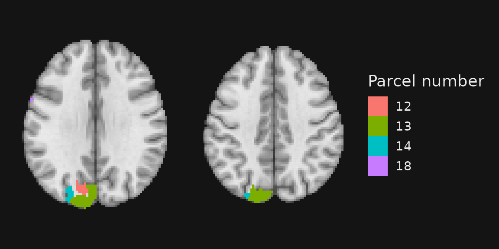
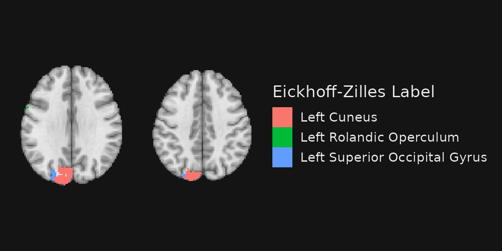
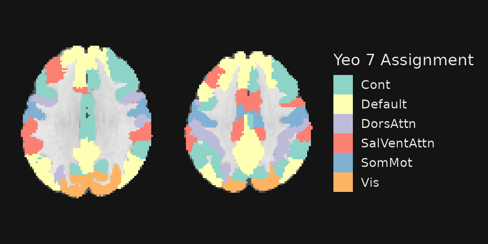

Working with annotations and labels in ggbrain
Michael Hallquist
26 Oct 2022
Source:vignettes/ggbrain_labels.Rmd
ggbrain_labels.RmdCategorical images in ggbrain
Many visualizations of brain data rely on continuous-valued images containing intensities or statistics. For example, we might wish to visualize the z-statistics of a general linear model.
Yet, many images contain integers whose values represent a priori regions of interest or clusters identified using familywise error correction methods. Brain atlases are a common example of integer-valued images. Here, we demonstrate the cortical parcellation developed by Schaefer and colleagues (2018).
Schaefer, A., Kong, R., Gordon, E. M., Laumann, T. O., Zuo, X.-N., Holmes, A. J., Eickhoff, S. B., & Yeo, B. T. T. (2018). Local-global parcellation of the human cerebral cortex from intrinsic functional connectivity MRI. Cerebral Cortex, 28, 3095-3114.
This version of the atlas contains 200 cortical parcels (in the paper, they show 100-1000 parcels).
## [1] 0 1 2 3 4 5 6 7 8 9 10 11 12 13 14 15 16 17
## [19] 18 19 20 21 22 23 24 25 26 27 28 29 30 31 32 33 34 35
## [37] 36 37 38 39 40 41 42 43 44 45 46 47 48 49 50 51 52 53
## [55] 54 55 56 57 58 59 60 61 62 63 64 65 66 67 68 69 70 71
## [73] 72 73 74 75 76 77 78 79 80 81 82 83 84 85 86 87 88 89
## [91] 90 91 92 93 94 95 96 97 98 99 100 101 102 103 104 105 106 107
## [109] 108 109 110 111 112 113 114 115 116 117 118 119 120 121 122 123 124 125
## [127] 126 127 128 129 130 131 132 133 134 135 136 137 138 139 140 141 142 143
## [145] 144 145 146 147 148 149 150 151 152 153 154 155 156 157 158 159 160 161
## [163] 162 163 164 165 166 167 168 169 170 171 172 173 174 175 176 177 178 179
## [181] 180 181 182 183 184 185 186 187 188 189 190 191 192 193 194 195 196 197
## [199] 198 199 200At a basic level, we can visualize this image in the same way as continuous images, as described in [ggbrain_introduction.html].
gg_obj <- ggbrain() +
images(c(underlay = underlay_file, atlas = schaefer200_atlas_file)) +
slices(c("z = 30", "z=40")) +
geom_brain(definition = "underlay") +
geom_brain(definition = "atlas", name = "Parcel number")
plot(gg_obj)As we can see, however, the continuous values represent discrete
parcels in the atlas. Thus, we may wish to use a categorical/discrete
color scale to visualize things. As with base ggplot2, we
can wrap the fill column in factor to force conversion to a
discrete data type.
Note that the numeric value of any image in a ggbrain
object is always called value. And thus, for
geom_brain and geom_outline objects, the
default aesthetic mapping is aes(fill=value).
gg_obj <- ggbrain() +
images(c(underlay = underlay_file, atlas = schaefer200_atlas_file)) +
slices(c("z = 30", "z=40")) +
geom_brain(definition = "underlay") +
geom_brain(definition = "atlas", name = "Parcel number",
mapping = aes(fill = factor(value)), fill_scale = scale_fill_hue()) +
render()
plot(gg_obj)## Warning: Removed 3855 rows containing missing values (`geom_raster()`).## Warning: Removed 3707 rows containing missing values (`geom_raster()`).
This is a lot to take in! It’s not especially easy to resolve 70+ parcels by their color…
We could use use subsetting syntax in the layer definition to reduce the number of parcels. For example, perhaps we’re interested in just the first 20.
gg_obj <- ggbrain() +
images(c(underlay = underlay_file, atlas = schaefer200_atlas_file)) +
slices(c("z = 30", "z=40")) +
geom_brain(definition = "underlay") +
geom_brain(definition = "atlas[atlas < 20]", name = "Parcel number",
mapping = aes(fill = factor(value)), fill_scale = scale_fill_hue()) +
render()
plot(gg_obj)## Warning: Removed 4943 rows containing missing values (`geom_raster()`).## Warning: Removed 4972 rows containing missing values (`geom_raster()`).
This is more manageable, though uninspiring.
Mapping image values to labels
Categorical images typically contain one integer value at each voxel. The values could be the cluster number from a clusterization procedure (e.g., AFNI’s 3dClusterize), a region of interest from a meta-analytically derived mask (e.g., NeuroSynth), or an atlas value from a stereotaxic atlas (e.g., the Schaefer atlas used here).
Regardless, the conceptual view is that each integer in the image represents a category of interest. Moreover, we may wish to label these categories with more descriptive labels, not simply the integer value. Thus, integers in an image give us the locations of regions to be labeled, while a separate data table provides the integers <-> labels mapping.
Our labels could be region names, intrinsic networks, or other
features we wish to highlight on the display. Regardless, there are two
major ways in which labels can be displayed on a ggbrain
plot: mapping the labels to colors displayed in the legend or adding
text annotations at the locations of the regions. We will review these
two approaches in turn.
First, however, let’s see how we tell ggbrain to merge
labels with an integer-valued NIfTI image. Above, we read in a CSV file
containing labels for regions in the Schaefer 200 parcellation. These
were generated in part using AFNI’s whereami command with the centroids
of each region serving as an input. This gives us automated labels that
we may wish to display on the plot. The CSV also contains a columns
called network that refers to the network mapping to the
Yeo 2011 7-network parcellation.
| roi_num | hemi | x | y | z | network | MNI_Glasser_HCP_v1.0 | Brainnetome_1.0 | CA_ML_18_MNI | schaefer_region |
|---|---|---|---|---|---|---|---|---|---|
| 1 | L | -24 | -53 | -9 | Vis | L_VentroMedial_Visual_Area_2 | rLinG_left | Left Lingual Gyrus | 1 |
| 2 | L | -24 | -76 | -13 | Vis | L_Eighth_Visual_Area | A37mv_left | Left Fusiform Gyrus | 2 |
| 3 | L | -43 | -70 | -9 | Vis | L_Area_PH | A37lv_left | Left Inferior Occipital Gyrus | 3 |
| 4 | L | -10 | -66 | -5 | Vis | L_Third_Visual_Area | rLinG_left | Left Lingual Gyrus | 4 |
| 5 | L | -25 | -94 | -11 | Vis | L_Third_Visual_Area | iOccG_left | Left Inferior Occipital Gyrus | 5 |
| 6 | L | -14 | -44 | -3 | Vis | L_PreSubiculum | A23v_left | Left Lingual Gyrus | 6 |
| 7 | L | -5 | -92 | -3 | Vis | L_Primary_Visual_Cortex | cCunG_left | Left Calcarine Gyrus | 7 |
| 8 | L | -46 | -71 | 8 | Vis | L_Medial_Superior_Temporal_Area | V5/MT+_left | Left Middle Occipital Gyrus | 8 |
| 9 | L | -23 | -96 | 6 | Vis | L_Third_Visual_Area | OPC_left | Left Middle Occipital Gyrus | 9 |
| 10 | L | -12 | -70 | 7 | Vis | L_Primary_Visual_Cortex | vmPOS_left | Left Calcarine Gyrus | 10 |
The structure of this data.frame is relatively flexible.
The primary requirement is that it contain a column called
value that maps to the numeric value of the corresponding
NIfTI image of interest. Here, we have a column called
roi_num that maps to the integer values in the mask. So, we
need to rename it to value for ggbrain to
accept it as a lookup table for labeling.
schaefer200_atlas_labels <- schaefer200_atlas_labels %>%
dplyr::rename(value = roi_num)Now that we have this, we can add the labels to the corresponding NIfTI image. This step does not necessarily change the plot, but instead gives us access to additional columns that we can use for labeling.
We use the labels argument with the images
function.
gg_base <- ggbrain() +
images(c(underlay = underlay_file)) +
images(c(atlas = schaefer200_atlas_file), labels=schaefer200_atlas_labels) +
slices(c("z = 30", "z=40")) +
geom_brain(definition = "underlay")
gg_obj <- gg_base +
geom_brain(definition = "atlas[atlas < 20]", name = "Parcel number",
mapping = aes(fill = factor(value)), fill_scale = scale_fill_hue())
plot(gg_obj)## Warning in melt.data.table(ll_df, measure.vars = label_columns, variable.name =
## ".label_col", : 'measure.vars' [hemi, network, MNI_Glasser_HCP_v1.0,
## Brainnetome_1.0, ...] are not all of the same type. By order of hierarchy, the
## molten data value column will be of type 'character'. All measure variables not
## of type 'character' will be coerced too. Check DETAILS in ?melt.data.table for
## more on coercion.## Warning: Removed 4943 rows containing missing values (`geom_raster()`).## Warning: Removed 4972 rows containing missing values (`geom_raster()`).
Notice that I have broken up the addition of images to the object
into two images steps. This allows for an unambiguous
mapping of the labels to the singular NIfTI. An alternative is to use a
named list of the sort:
images(c(im1=file1, im2=file2), labels=list(im2=im2labels)).
Also, the plot above is identical to our earlier plot. This is because we have mapped the fill to the numeric value, not another column in the labels file.
How about we use the labels from the Eickhoff-Zilles macro labels from N27?
gg_obj <- gg_base +
geom_brain(definition = "atlas[atlas < 20]", name = "Eickhoff-Zilles Label",
mapping = aes(fill = CA_ML_18_MNI), fill_scale = scale_fill_hue()) +
render()
plot(gg_obj)## Warning: Removed 4943 rows containing missing values (`geom_raster()`).## Warning: Removed 4972 rows containing missing values (`geom_raster()`).
Notice how we went from four colors (one per number) in the previous plot to three labels here. Why did this happen? The labels for the four regions were not unique in the lookup atlas.
## value CA_ML_18_MNI
## 1 12 Left Cuneus
## 2 13 Left Cuneus
## 3 14 Left Superior Occipital Gyrus
## 4 18 Left Rolandic OperculumThis highlights a useful point: there can be a one-to-many mapping between labels and unique integer values in the NIfTI image. Indeed, this is often an explicit goal. For example, what if we want to see the Yeo 7 networks assignments for the nodes on these two slices?
(Note that I’m removing the filter atlas < 20 here to
let all of the parcels on these slices get to play.)
gg_obj <- gg_base +
geom_brain(definition = "atlas", name = "Yeo 7 Assignment",
mapping = aes(fill = network))
plot(gg_obj)## Warning: Removed 3855 rows containing missing values (`geom_raster()`).## Warning: Removed 3707 rows containing missing values (`geom_raster()`).
If we do not provide a color palette using the
fill_scale argument, it defaults to ColorBrewer’s
“Set3”, scale_fill_brewer(palette = "Set3").
What if we wanted to use the same coloration as in the original Yeo et al. 2011 paper? These colors are provided in the Yeo2011_7Networks_ColorLUT.txt file from Freesurfer.
yeo_colors <- read.table(system.file("extdata", "Yeo2011_7Networks_ColorLUT.txt", package = "ggbrain")) %>%
setNames(c("index", "name", "r", "g", "b", "zero")) %>% slice(-1)
# Convert RGB to hex. Also, using a named set of colors with scale_fill_manual ensures accurate value -> color mapping
yeo7 <- as.character(glue::glue_data(yeo_colors, "{sprintf('#%.2x%.2x%.2x', r, g, b)}")) %>%
setNames(c("Vis", "SomMot", "DorsAttn", "SalVentAttn", "Limbic", "Cont", "Default"))
gg_obj <- gg_base +
geom_brain(definition = "atlas", name = "Yeo 7 Assignment",
mapping = aes(fill = network), fill_scale = scale_fill_manual(values=yeo7))
plot(gg_obj)## Warning: Removed 3855 rows containing missing values (`geom_raster()`).## Warning: Removed 3707 rows containing missing values (`geom_raster()`).Combining filled areas with outlines
It may be useful to map some labels to the fill of an area and to draw outlines around areas using another label. For example, if regions are nested within networks, we might want to outline the networks with a certain color while having separate colors for regions.
gg_obj <- gg_base +
geom_outline(definition = "atlas", name = "Yeo 7 Assignment",
mapping = aes(outline = network), outline_scale = scale_fill_manual(values=yeo7)) +
geom_brain(definition = "DAN Region := atlas[atlas.network == 'DorsAttn']", mapping=aes(fill=CA_ML_18_MNI))
plot(gg_obj)## Warning: Removed 29398 rows containing missing values (`geom_raster()`).## Warning: Removed 4911 rows containing missing values (`geom_raster()`).## Warning: Removed 29296 rows containing missing values (`geom_raster()`).## Warning: Removed 4855 rows containing missing values (`geom_raster()`).
This admittedly a busy figure!